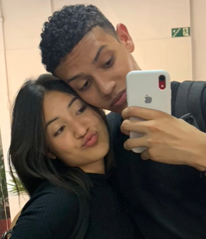
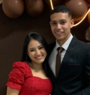
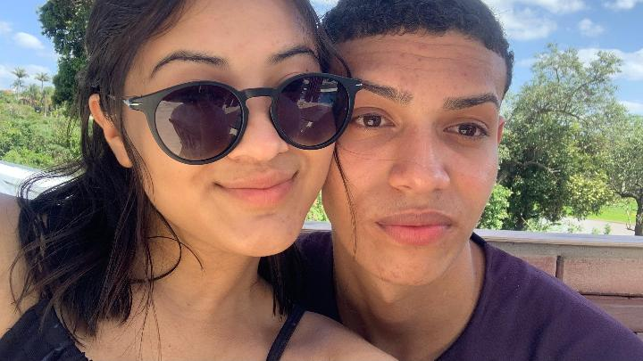
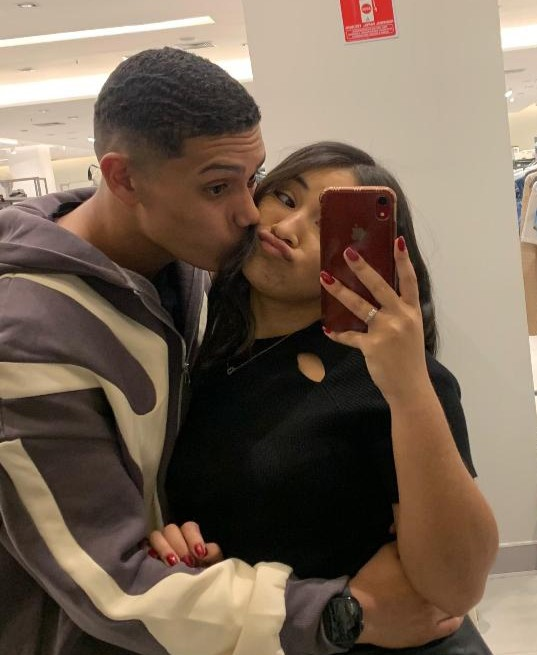

Meu amorzinho, existem dias na vida que a gente nunca esquece,
mas o dia em que você chegou foi, sem dúvida, o mais importante de todos para mim.
Você trouxe cor, leveza e um amor que eu nem sabia que existia.
Escrevi isso aqui para te lembrar o quanto você é especial para mim
e o quanto eu sou grato por cada segundo ao seu lado.
Mas nossa história não começou do nada...
Vamos voltar um pouquinho no tempo para lembrar de onde tudo isso começou?
Com todo o meu amor,
SEU NAMORADO
Lembro como se fosse ontem,
daquela noite em que eu estava na salinha da mídia
e, do nada, me passou pela cabeça descer lá para baixo.
E quando eu desci, vejo você, toda linda, sentada sozinha.
Fiquei te paquerando KKKKKKKKK
E quando acabou a vigília, lembro de entrar no carro
pensando ainda em você.
E meu pai fala que você é muito linda.
E logo em seguida, você me seguia no Insta,
e o resto foi história, né?
Começamos a nos ver de tarde na igreja,
você depois da escola e eu depois do meu trampo, que era na TIM.
Com uma semana nos encontrando e conversando, já comprei um ursinho para você:
a Belinha.
No dia que eu dei a Belinha, 14/10/2024,
ganhei também um beijinho seu. Papo foi um dos melhores dias da minha vida!
Daí em diante, começamos a ficar mais próximos.
Fomos no sítio da igreja e, ali, pela primeira vez, ME SENTI SEU NAMORADO.
Foi muito boa aquela sensação de você e eu estarmos juntos de boa,
sem ser escondido na igreja.
Depois daí, seu pai já estava desconfiando.
E eu conversei com ele. Confesso, estava me cagando todo naquele dia KKKKKKK.
Se eu não me engano, era dia 11/12/2024.
Depois daí, começamos a nos ver na igreja e escondidos por fora.
Foram aventuras, não é mesmo?
O melhor de tudo é ver a sua evolução como pessoa.
Te conheci quando você tinha 16, e já já você faz 19.
E a cada segundo, cada minuto, cada dia, cada semana, cada mês, cada ano que passa,
eu te amo e te admiro mais!
2025, ano em que passamos madrugadas orando para realizar o que temos hoje.
Ano em que nos aproximamos mais um do outro.
Meu primeiro aniversário com o meu maior presente: VOCÊ!
Foram várias conquistas ao seu lado.
Lembro como se fosse ontem de comemorar com você a minha contratação na Pernambucanas.
Foi um dos melhores momentos da minha vida, e comemoramos da melhor forma!
É muito bom ter você como mulher e ter sua confiança.
Perdemos a nossa virgindade um com o outro,
e saber que foi com a pessoa certa me traz paz e conforto.
Até porque vai ser só você pelo resto da minha vida.
Eu te amo, minha gostosaaaa!
Há um ano, vivemos um dos melhores dias das nossas vidas.
O dia em que, finalmente, cada oração foi ouvida!
Cada segundo de espera e ansiedade valeu a pena!
Depois daí, não precisamos mais nos encontrar escondidos.
Começamos a sair mais, a conviver mais com a família um do outro.
Nos conhecemos melhor e vimos que não somos perfeitos.
Porém, o nosso amor venceu!
Venceu qualquer briguinha.
E, a cada dia que o nosso amor vencia, ele se tornava mais forte.
Sara, eu não sou tão bom com as palavras,
mas só em ter esse privilégio de ser seu namorado, de te amar e ser amado por você,
me faz ser o homem mais feliz e realizado do universo!
Eu amo cada detalhe do seu corpo,
cada traço seu foi feito perfeitamente para mim.
Amo seu sorriso, seu jeito, sua voz, seu olhar e até suas manias KKKKKKK.
Amo quem você é e, principalmente, amo a pessoa que você está se tornando.
Quando olho para trás e vejo tudo o que vivemos,
percebo o quanto Deus foi perfeito em colocar você na minha vida.
Desde aquela noite na vigília, quando eu desci lá para baixo e vi você sentada sozinha,
eu jamais imaginaria que aquela menina se tornaria o amor da minha vida.
Já passamos por tantas coisas juntos...
momentos bons, momentos difíceis, risadas, choros, brigas, pedidos de desculpas,
conquistas, sonhos e tantas outras coisas que ainda estão por vir.
E se tem uma coisa que eu tenho certeza,
é que eu quero continuar vivendo tudo isso ao seu lado.
Quero comemorar suas conquistas,
te apoiar nos seus dias difíceis,
rir das coisas mais bobas com você
e continuar construindo a nossa história, um dia de cada vez.
Eu não sei exatamente o que o futuro nos reserva,
mas sei quem eu quero ao meu lado quando ele chegar.
Quero você.
Quero continuar sendo seu namorado,
seu melhor amigo, seu parceiro e a pessoa que vai estar ao seu lado em cada fase da sua vida.
Obrigado por cada momento, cada abraço, cada beijo,
cada conversa, cada oração e por cada segundo que você escolheu passar comigo.
Eu te amo, Sara.
E, se eu pudesse voltar naquela noite da vigília,
eu desceria novamente só para encontrar você.
Porque, no fim de tudo,
eu descobri que aquele simples momento mudou a minha vida para sempre.


